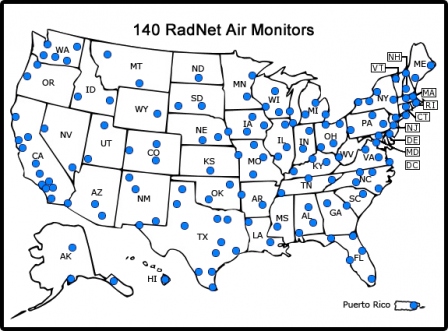

# From https://www.eia.gov/nuclear/generation/index.html
import pandas as pd
import numpy as np
#pd read xlsx
usreact13 = pd.read_excel('../Data/Pre-Clean/Nuclear_Generation/usreact13.xlsx')
usreact14 = pd.read_excel('../Data/Pre-Clean/Nuclear_Generation/usreact14.xlsx')
usreact15 = pd.read_excel('../Data/Pre-Clean/Nuclear_Generation/usreact15.xlsx')
usreact16 = pd.read_excel('../Data/Pre-Clean/Nuclear_Generation/usreact16.xlsx')
usreact17 = pd.read_excel('../Data/Pre-Clean/Nuclear_Generation/usreact17.xlsx')
usreact18 = pd.read_excel('../Data/Pre-Clean/Nuclear_Generation/usreact18.xlsx')
usreact19 = pd.read_excel('../Data/Pre-Clean/Nuclear_Generation/usreact19.xlsx')
usreact20 = pd.read_excel('../Data/Pre-Clean/Nuclear_Generation/usreact20.xlsx')
usreact21 = pd.read_excel('../Data/Pre-Clean/Nuclear_Generation/usreact21.xlsx')
usreact22 = pd.read_excel('../Data/Pre-Clean/Nuclear_Generation/usreact22.xlsx')Gathering
Nuclear Energy Utilization Factor
Description of the data
There are 9 .xlsx file that shows the nuclear energy utilization for power plants in from 2013 to 2022. Within each table there are 20 columns.
State: US State
Plant ID: unique ID for a Nuclear power plant
Plant Name: Nuclear power plant name
Unit: reactor unit number
January - December: generating of electricity in Megawatthours
Year_to_Date: generating of electricity in Megawatthours in the entire year
Nameplate:
Summer:
Utilization Factor: Summer/Nameplate, this shows how much of the power generated are been used
Use excel to get the data
Consumption of Fuels for Electricity Generation and Useful Thermal Output(Nuclear)
Description of the data
period: years 2013-2022
location: US state, US
stateDescription: description of the location
sectorid: unique ID for planet
sectorDescription: planet name
fueltypeid: all nuclear
fuelTypeDescription: all nuclear
consumption-for-eg-btu: fuel usage
consumption-for-eg-btu-units: units in million MMBtu
total-consumption-btu: total fuel usage
total-consumption-btu-units: units in million MMBtu
Use python API to get the data
# https://www.eia.gov/opendata/browser/electricity/electric-power-operational-data?frequency=annual&data=consumption-for-eg-btu;total-consumption-btu;&facets=fueltypeid;&fueltypeid=NUC;&start=2013&end=2022&sortColumn=period;&sortDirection=desc;
# API_Key = "Bc2HtlspmpvpzuBbPfIi8HoancNTzVYN9YApx3fu"
import requests
import pandas as pd
import numpy as np
import json
import csv
thor_url = "https://api.eia.gov/v2/electricity/electric-power-operational-data/data/?frequency=annual&data[0]=consumption-for-eg-btu&data[1]=total-consumption-btu&facets[fueltypeid][]=NUC&start=2013&end=2022&sort[0][column]=period&sort[0][direction]=desc&offset=0&length=5000&api_key=Bc2HtlspmpvpzuBbPfIi8HoancNTzVYN9YApx3fu"
resp = requests.get(thor_url)
data = resp.text
data = json.loads(data)
details=data['response']['data']
rows=[]
for chunk in details:
row=[]
for key,value in chunk.items():
value=value if value else np.nan
row.append(value)
# print('row',row)
rows.append(row)
# Columns
columns = ['period', 'location', 'stateDescription', 'sectorid', 'sectorDescription', 'fueltypeid', 'fuelTypeDescription', 'consumption-for-eg-btu', 'consumption-for-eg-btu-units', 'total-consumption-btu', 'total-consumption-btu-units'](“Opendata - u.s. Energy Information Administration (EIA),” n.d.)
Consumption of Fuels for Electricity Generation and Useful Thermal Output(Coal)
Description of the data
period: years 2013-2022
location: US state, US
stateDescription: description of the location
sectorid: unique ID for planet
sectorDescription: planet name
fueltypeid: all coal
fuelTypeDescription: all coal
consumption-for-eg-btu: fuel usage
consumption-for-eg-btu-units: units in million MMBtu
total-consumption-btu: total fuel usage
total-consumption-btu-units: units in million MMBtu
Use r API to get the data
# https://www.eia.gov/opendata/browser/electricity/electric-power-operational-data?frequency=annual&data=consumption-for-eg-btu;total-consumption-btu;&facets=fueltypeid;&fueltypeid=COW;&start=2013&end=2022&sortColumn=period;&sortDirection=desc;
library(httr)
library(jsonlite)
library(tidyverse)
res <- GET("https://api.eia.gov/v2/electricity/electric-power-operational-data/data/?frequency=annual&data[0]=consumption-for-eg-btu&data[1]=total-consumption-btu&facets[fueltypeid][]=COW&start=2013&end=2022&sort[0][column]=period&sort[0][direction]=desc&offset=0&length=5000&api_key=Bc2HtlspmpvpzuBbPfIi8HoancNTzVYN9YApx3fu")
data <- fromJSON(rawToChar(res$content))(“Opendata - u.s. Energy Information Administration (EIA),” n.d.)
RadNet
About the Data
The nationwide RadNet system monitors the nation’s air, precipitation and drinking water to track radiation in the environment. Over time, RadNet sample testing and monitoring results show the fluctuations in normal background levels of environmental radiation. The RadNet system will also detect higher than normal radiation levels during a radiological incident.
RadNet has tracked radiation from both atmospheric nuclear weapons tests and nuclear reactor accidents at Chernobyl (Ukraine) and Fukushima (Japan). During a radiological incident, public officials use RadNet data to help make science-based decisions about protecting the public. Scientists use RadNet air monitoring data to help estimate the potential radiation dose to humans. They use both air and precipitation data to determine if contaminated rain or snow will wash radionuclides into the soil or water. Learn how RadNet was used during and after Chernobyland Fukushima.
Near-Real-Time Air Monitoring
RadNet has 140 stationary air monitors located across all 50 states. RadNet stationary monitors run 24 hours a day, 7 days a week, and send near-real-time measurements of gamma radiation to EPA’s National Analytical Radiation Environmental Laboratory (NAREL). Computers continuously review these data. If there is a meaningful increase in radiation levels, laboratory staff are alerted and then investigate the cause.
In an effort to make RadNet radiation data more understandable to the public and easier to compare with international data, EPA is adding exposure rate measurements to our other system capabilities. Exposure rate measurements indicate the level of radiation present per hour in the vicinity of the monitor.
View gamma radiation monitoring results in near-real-time on the RadNet Dashboard.
Download gamma radiation monitoring results in near-real-time as a CSV File.
Sampling
RadNet sample analyses on precipitation, drinking water and air filters are conducted following a routine schedule, unless analysis is accelerated after an emergency event or in response to very low level detection by other international air monitoring agencies. Learn more about RadNet sampling and analyses schedules.
Air Filters
Filters on RadNet air monitors capture particles from the air (airborne particulates). Monitor operators collect the filters and send them to EPA’s National Analytical Radiation Environmental Laboratory (NAREL) for testing. Staff use these test results to calculate the concentration of radionuclides on the filters and find trends in airborne radiation. Detailed laboratory analysis of air filters detects trace amounts of radioactive material that the sensitive near-real-time air monitors can’t detect in real-time. Laboratory analysis identifies the radioactive material and the average concentration on the air filter in the conventional unit of curies (Ci) per cubic meter. Learn more about curies and the international SI unit of becquerel (Bq).

RadNet stationary monitors collect air particulates continuously during routine conditions and during radiological incidents. In a radiological emergency, EPA may deploy teams to conduct air monitoring and environmental sampling. Learn about EPA’s role in radiological emergency response.
A RadNet air filter inquiry may be initiated when there is potential for a release of radioactive materials to the air that could result in the presence of airborne radionuclides at low concentrations, or if low concentrations of radionuclides have been detected in the US or by an international agency. A RadNet air filter inquiry is not a response to a known radiological emergency. View the RadNet Air Filter Inquiry Log.
RadNet air monitors pass air through a filter which traps particulates. Filters are sent to NAREL for a sensitive screening analysis and, if needed, additional laboratory analyses that identify the radionuclide(s) on the filter.
Monitor operators collect air filters and send them to NAREL for analysis. Laboratory analyses include a gross beta analysis is performed on each air filter, followed by a gamma scan if the beta activity is greater than 1 pCi/m3. Each year, a composite sample of the air filters for each monitor is analyzed for gamma emitting radionuclides. Isotopic plutonium (Pu-238, Pu-239/Pu-240) and uranium (U-234, U-235, and U-238) analyses are performed on composite samples from one-fourth of the stations on a four-year rotating schedule. We cannot distinguish between Pu-239 and Pu-240, so we write it as Pu-239/240.
View RadNet air filter results by monitoring station, or search for results on the Envirofacts website.
Precipitation
EPA scientists routinely test precipitation samples from 26 sites in the U.S. to find trends in radionuclide concentration. The stations submit precipitation samples to NAREL following rainfall, snow or sleet events. Under normal conditions, scientists composite the samples and analyze them monthly. The composite sample is analyzed for gamma-emitting nuclides. Results are reported in picocuries per liter (pCi/L).
Drinking Water
EPA’s RadNet program obtains quarterly drinking water samples from 47 sites across the country for laboratory analysis. Every sample is analyzed for tritium (H-3) quarterly. One sample from each station is analyzed for iodine-131 (I-131) once a year.
An annual composite sample from each monitoring station is analyzed for gross alpha and beta radiation. Any sample with elevated gross alpha radiation (2 pCi/L) will be analyzed for radium-226 (Ra-226), plutonium (Pu-238, Pu-239 Pu-240), and uranium (U-234, U-235, and U-238). If the radium-226 result is between 3 and 5 pCi/L, then the sample is analyzed for radium-228 (Ra-228). All of the annual composite samples are also analyzed for gamma-emitting radionuclides. Twenty-five percent (25%) of the annual composite samples from each monitoring station are analyzed for strontium-90 (Sr-90).
Description of the data
This data set contains 12 columns:
Location Names: Location of different observation point
Sample Collection Time: The time that the sample is collected
Dose Equivalent Rate (nSv/h): Radiation dose in nSv/h
Gamma Count Rate R02 - R09 (CPM): Gamma radiation rate in CPM
Status:
Get the Data from CSV
import pandas as pd
import glob
# Read in the data
files_path = sorted(glob.glob('../Data/Pre-Clean/rad_net/*.csv'))
dfs = []
for file in files_path:
df = pd.read_csv(file)
dfs.append(df)
full_df = pd.concat(dfs, ignore_index=True)
print(full_df.head())
print(full_df.shape) LOCATION_NAME SAMPLE COLLECTION TIME DOSE EQUIVALENT RATE (nSv/h) \
0 AK: ANCHORAGE 01/01/2023 00:41:00 33.0
1 AK: ANCHORAGE 01/01/2023 01:41:00 32.0
2 AK: ANCHORAGE 01/01/2023 02:41:00 31.0
3 AK: ANCHORAGE 01/01/2023 03:42:00 32.0
4 AK: ANCHORAGE 01/01/2023 04:42:00 31.0
GAMMA COUNT RATE R02 (CPM) GAMMA COUNT RATE R03 (CPM) \
0 657.0 368.0
1 651.0 369.0
2 645.0 366.0
3 650.0 369.0
4 647.0 364.0
GAMMA COUNT RATE R04 (CPM) GAMMA COUNT RATE R05 (CPM) \
0 116.0 75.0
1 114.0 70.0
2 112.0 73.0
3 114.0 71.0
4 113.0 69.0
GAMMA COUNT RATE R06 (CPM) GAMMA COUNT RATE R07 (CPM) \
0 41.0 60.0
1 39.0 61.0
2 38.0 60.0
3 41.0 61.0
4 40.0 59.0
GAMMA COUNT RATE R08 (CPM) GAMMA COUNT RATE R09 (CPM) STATUS
0 71.0 28.0 APPROVED
1 70.0 27.0 APPROVED
2 72.0 29.0 APPROVED
3 69.0 27.0 APPROVED
4 70.0 27.0 APPROVED
(875467, 12)/var/folders/4f/565zs95x5xb988rb96g8px_40000gn/T/ipykernel_19736/2109943167.py:11: FutureWarning: The behavior of DataFrame concatenation with empty or all-NA entries is deprecated. In a future version, this will no longer exclude empty or all-NA columns when determining the result dtypes. To retain the old behavior, exclude the relevant entries before the concat operation.
full_df = pd.concat(dfs, ignore_index=True)References
“Opendata - u.s. Energy Information Administration (EIA).” n.d. https://www.eia.gov/opendata/index.php.
“U.s. Nuclear Generation of Electricity.” n.d. https://www.eia.gov/nuclear/generation/index.html.
US EPA, OAR. 2014. “RadNet.” https://www.epa.gov/radnet.